Autonomous AI-powered drone, built for long-range reconnaissance and mission awareness.
Designed for extended-range missions, T. Blade is an autonomous reconnaissance drone concept focused on aerial observation, area monitoring, and real-time intelligence gathering. Its lightweight, streamlined architecture supports agile deployment while enabling stable and efficient performance across complex operational environments.
With AI-powered autonomy and seamless system integration, T. Blade helps teams expand surveillance reach, improve situational awareness, and respond faster to changing conditions—delivering a smarter approach to protecting critical spaces and maintaining mission visibility.
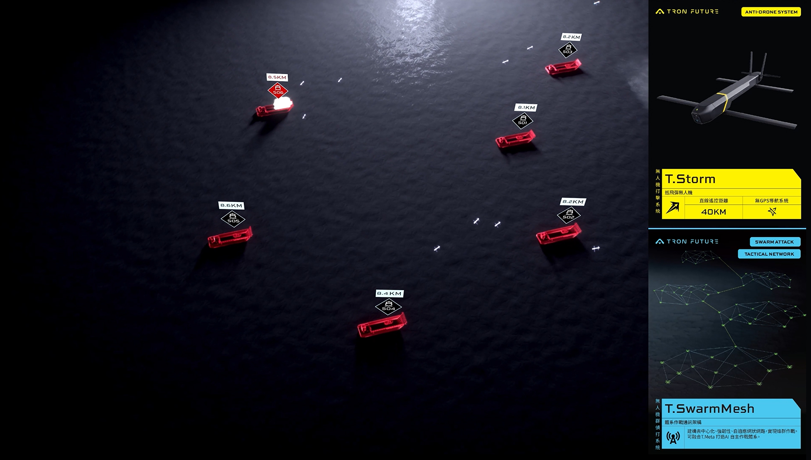
Long-range surveillance across vast and complex terrain
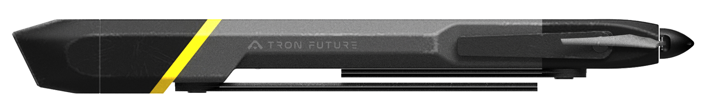
Folded into a streamlined, tube-compatible form factor for rapid canister launch. The minimized cross-section allows dense packing and efficient storage across mobile and fixed deployment platforms.
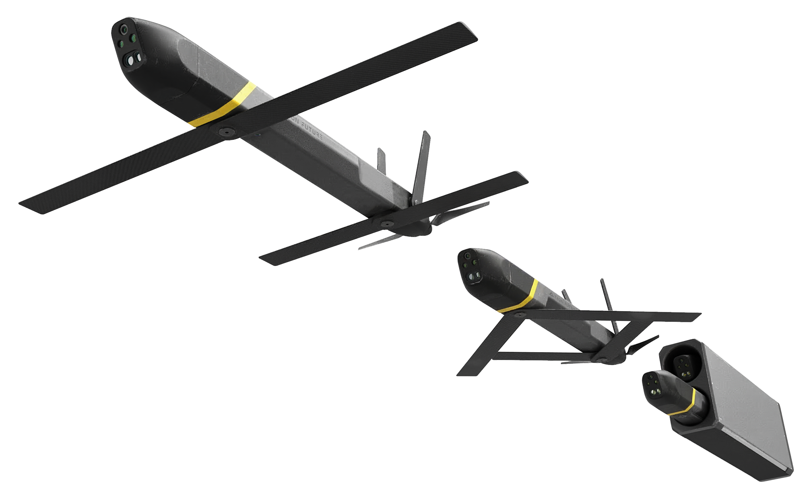
Upon ejection, wings and tail fins deploy automatically, transitioning from a compact projectile into a fully stabilized fixed-wing platform — ready for autonomous reconnaissance within seconds of launch.
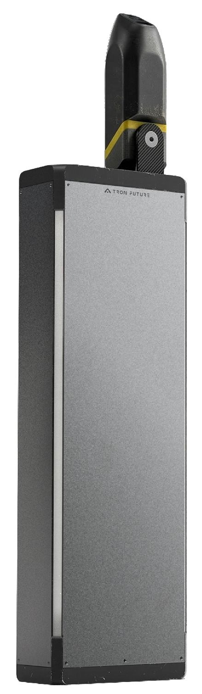
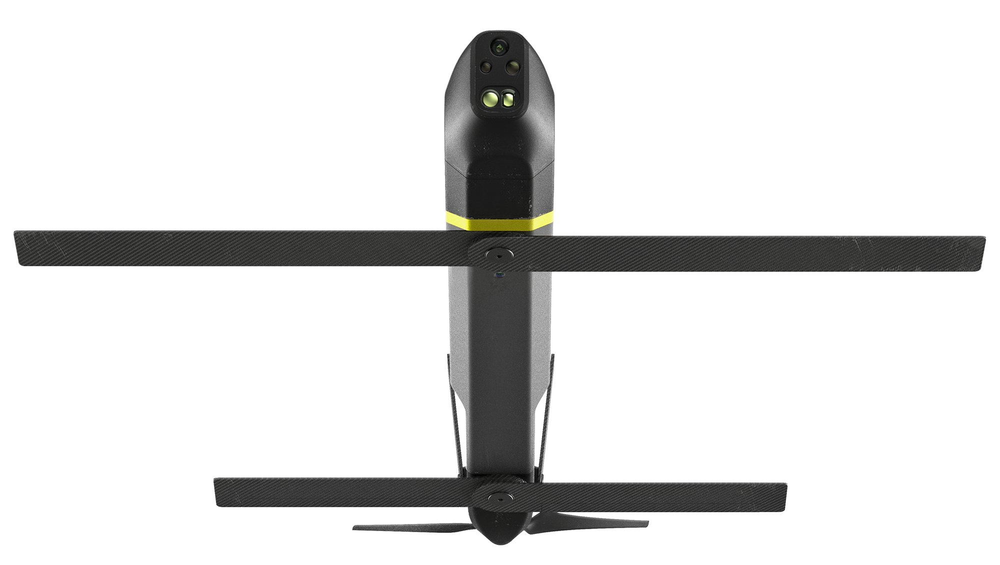
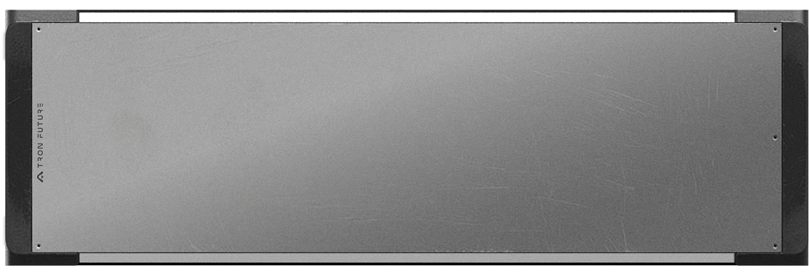
The launch platform houses two T. Blade units side by side, enabling consecutive deployment without reloading. An adjustable elevation mechanism allows operators to set the optimal launch angle based on terrain and mission profile — maximizing initial altitude gain and extending effective range from the moment of ejection.
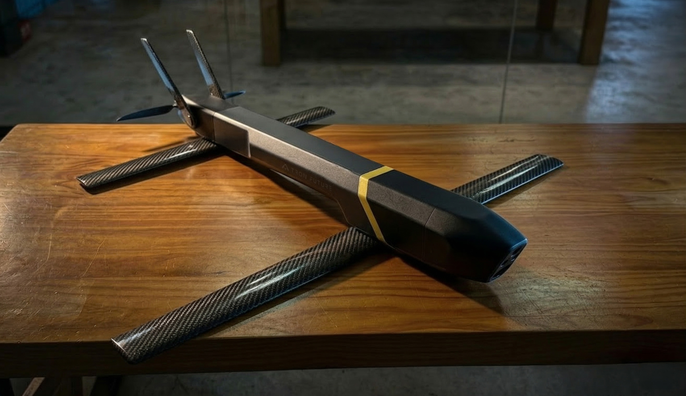
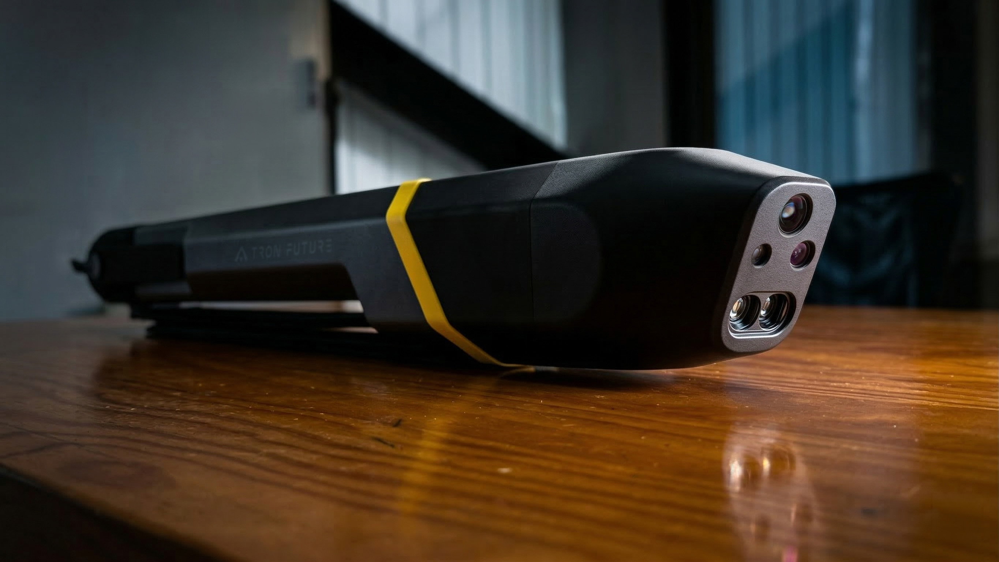
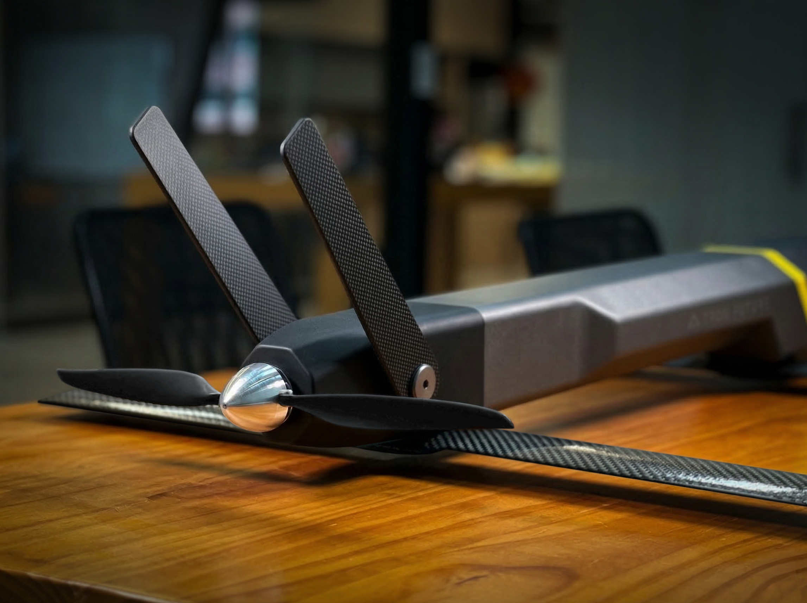
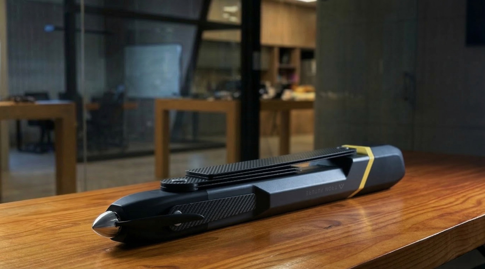
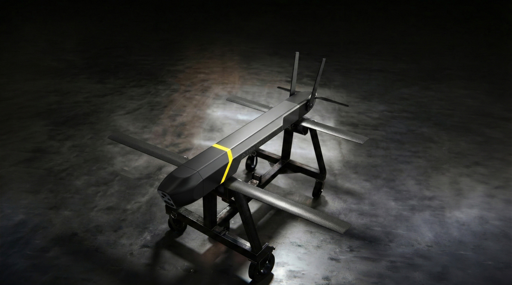
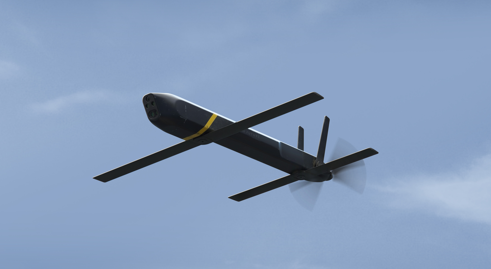